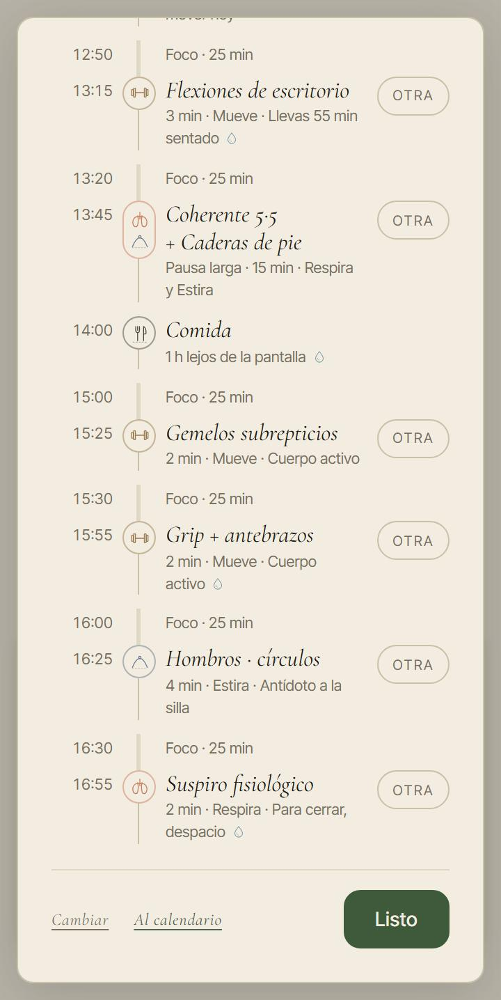
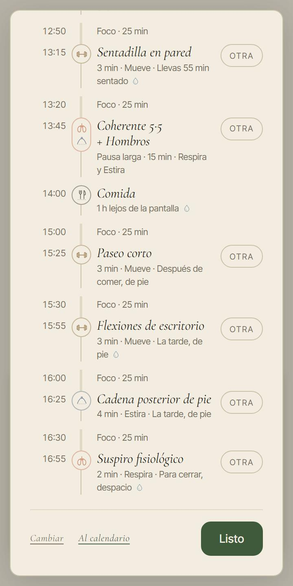
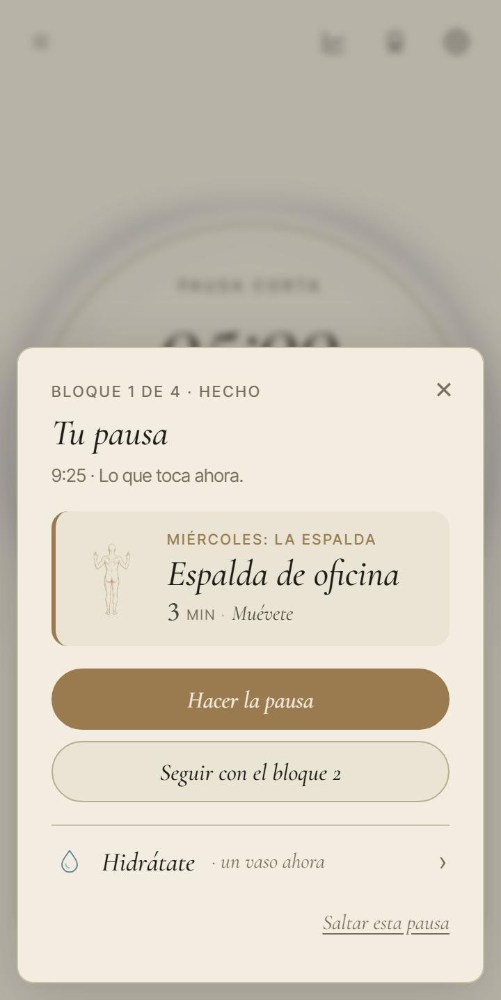
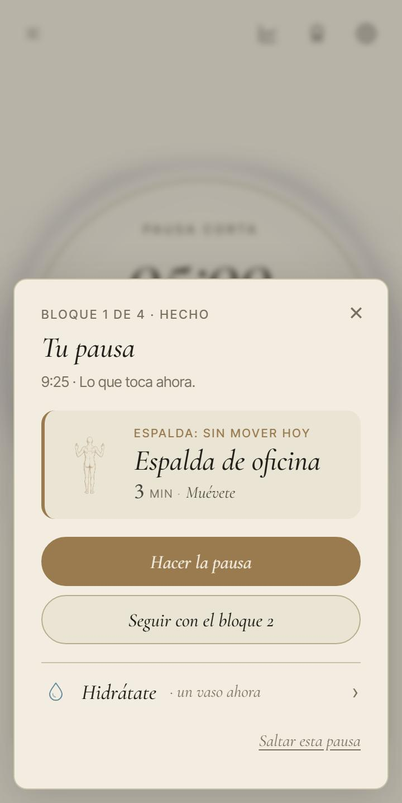
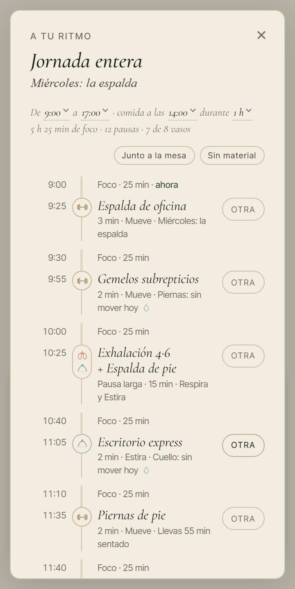
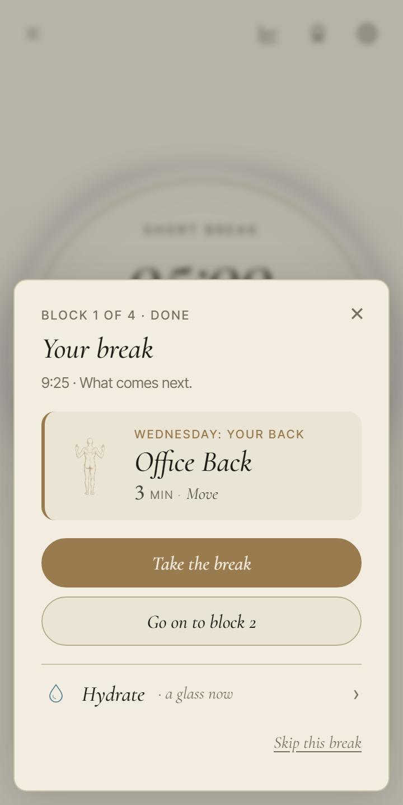
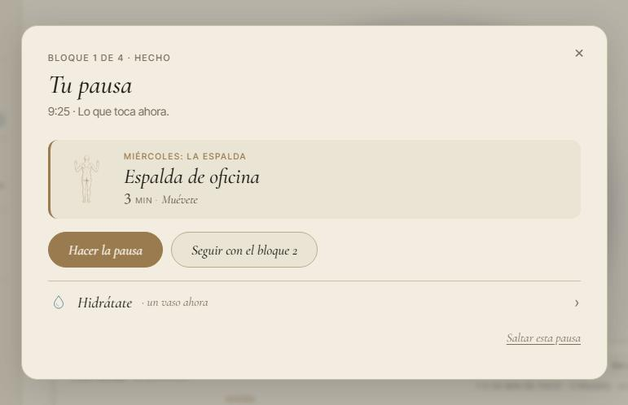

<title>Los días diseñados</title>
<meta name="claude:viewport-fit-sides" content="cover">
<link rel="preconnect" href="https://fonts.googleapis.com">
<link rel="stylesheet" href="https://fonts.googleapis.com/css2?family=Cormorant+Garamond:ital,wght@1,500&family=Inter+Tight:wght@400;500;600&display=swap">
<style>
/* Una columna de lectura, como una carta de PACE; las fotos van en pareja (móvil y escritorio)
   cuando hay ancho. Colores y letras, los de la app (DESIGN_SYSTEM.md). */
:root {
  --paper: #F2EDE0; --paper-2: #EAE4D4; --ink: #1F1C17; --ink-2: #4A453C; --ink-3: #6F695B;
  --line: #D6CDB6; --focus: #3E5A3A; --breathe: #C97A5D; --mark: rgba(62, 90, 58, 0.10);
  --serif: 'Cormorant Garamond', Georgia, 'Times New Roman', serif;
  --sans: 'Inter Tight', system-ui, -apple-system, 'Segoe UI', sans-serif;
}
@media (prefers-color-scheme: dark) { :root:not([data-theme="light"]) {
  --paper: #1d1a14; --paper-2: #26211a; --ink: #EDE5D3; --ink-2: #c0b49e; --ink-3: #B2A995;
  --line: #4d4536; --focus: #98B58B; --breathe: #E8A98F; --mark: rgba(152, 181, 139, 0.14); color-scheme: dark; } }
:root[data-theme="dark"] {
  --paper: #1d1a14; --paper-2: #26211a; --ink: #EDE5D3; --ink-2: #c0b49e; --ink-3: #B2A995;
  --line: #4d4536; --focus: #98B58B; --breathe: #E8A98F; --mark: rgba(152, 181, 139, 0.14); color-scheme: dark; }
* { box-sizing: border-box; }
body { background: var(--paper); color: var(--ink); font-family: var(--sans); font-size: 16px; line-height: 1.55; }
.hoja { max-width: 900px; margin: 0 auto; padding-left: max(16px, env(safe-area-inset-left, 0px)); padding-right: max(16px, env(safe-area-inset-right, 0px)); padding-block: 36px 64px; display: flex; flex-direction: column; gap: 40px; }
h1, h2 { font-family: var(--serif); font-style: italic; font-weight: 500; text-wrap: balance; margin: 0; }
h1 { font-size: clamp(36px, 7vw, 50px); line-height: 1.04; }
h2 { font-size: 28px; line-height: 1.1; }
p { margin: 0; max-width: 64ch; color: var(--ink-2); }
p b { color: var(--ink); font-weight: 600; }
.eyebrow { font-size: 12px; letter-spacing: 0.14em; text-transform: uppercase; color: var(--ink-3); }
section { display: flex; flex-direction: column; gap: 14px; }
.par { display: grid; grid-template-columns: minmax(0, 360px) minmax(0, 1fr); gap: 20px; align-items: start; }
@media (max-width: 760px) { .par { grid-template-columns: minmax(0, 1fr); } }
figure { margin: 0; display: flex; flex-direction: column; gap: 6px; min-width: 0; }
figure img { width: 100%; height: auto; display: block; border: 1px solid var(--line); border-radius: 10px; }
figcaption { font-size: 13px; color: var(--ink-3); }
.mov img { max-width: 360px; }
.aviso { max-width: 380px; background: var(--paper-2); border: 1px solid var(--line); border-radius: 14px; padding: 12px 14px; display: grid; grid-template-columns: 28px 1fr; gap: 4px 10px; }
.aviso .ico { grid-row: span 2; width: 28px; height: 28px; border-radius: 7px; background: var(--focus); }
.aviso .t { font-weight: 600; font-size: 15px; }
.aviso .c { font-size: 14px; color: var(--ink-2); }
.tabla { border-collapse: collapse; font-size: 15px; font-variant-numeric: tabular-nums; }
.tabla td { padding: 4px 18px 4px 0; border-bottom: 1px solid var(--line); vertical-align: top; }
.tabla td:first-child { color: var(--ink-3); }
.opciones { display: grid; grid-template-columns: repeat(2, minmax(0, 1fr)); gap: 20px; }
@media (max-width: 640px) { .opciones { grid-template-columns: minmax(0, 1fr); } }
.op { display: flex; flex-direction: column; gap: 8px; min-width: 0; }
.op h3 { margin: 0; font-family: var(--serif); font-style: italic; font-weight: 500; font-size: 22px; }
.op .rec { font-family: var(--sans); font-style: normal; font-size: 12px; letter-spacing: 0.1em; text-transform: uppercase; color: var(--focus); margin-left: 6px; }
.op img { max-width: 320px; }
.pregunta { background: var(--mark); border-radius: 12px; padding: 18px 20px; display: flex; flex-direction: column; gap: 8px; }

.ancho { overflow-x: auto; max-width: 100%; }
table.casos, table.dia, table.semana { border-collapse: collapse; font-size: 14px; font-variant-numeric: tabular-nums; min-width: 640px; }
table.casos th, table.casos td, table.dia th, table.dia td, table.semana th, table.semana td { text-align: left; padding: 6px 12px 6px 0; border-bottom: 1px solid var(--line); vertical-align: top; }
table thead th { font-size: 12px; letter-spacing: 0.06em; text-transform: uppercase; color: var(--ink-3); font-weight: 500; }
table.casos tbody th { font-weight: 600; color: var(--ink); padding-right: 16px; }
table.casos tr.nuevo td, table.casos tr.nuevo th { border-top: 2px solid var(--line); }
table.casos tr.rec td { background: var(--mark); }
table.dia td.h { color: var(--ink-3); white-space: nowrap; }
table.dia .pl { display: block; color: var(--ink-2); }
table.dia .pl.pie { color: var(--ink); font-weight: 600; }
table.dia .pl.pie::before { content: '↑ '; color: var(--focus); }
table.dia .fr { display: block; font-family: var(--serif); font-style: italic; font-size: 15px; color: var(--ink-3); }
table.dia tr.tarde td { background: var(--mark); }
ul.lista { margin: 0; padding-left: 20px; display: flex; flex-direction: column; gap: 6px; max-width: 64ch; color: var(--ink-2); }
ul.lista b { color: var(--ink); }
.trio { display: grid; grid-template-columns: repeat(3, minmax(0, 1fr)); gap: 18px; }
@media (max-width: 760px) { .trio { grid-template-columns: minmax(0, 1fr); } }
.trio .op img { max-width: 100%; }
.nota { font-size: 14px; color: var(--ink-3); }
</style>
<main class="hoja">
  <header style="display:flex;flex-direction:column;gap:12px">
    <div class="eyebrow">PACE · «A tu ritmo» · 17 oct. 2026</div>
    <h1>Los días diseñados</h1>
    <p>Elegiste ofrecer <b>días con rutinas bien hechas y medidas</b>. Hoy cada día ya lleva un tema y las series eligen cada
      pausa, pero el día no tiene intención y <b>la tarde se queda sentada</b>. Esta página propone qué es un día diseñado,
      con los números de treinta días laborables y fotos de la app real del miércoles 14. Al final, cuatro preguntas.</p>
  </header>

  <section>
    <h2>Lo que pasa hoy por la tarde</h2>
    <p>Jornada de 9:00 a 17:00, comida a las 14:00, el aro a 25. Por la mañana las series van alternando de pie y sentado.
      Después de comer ya se han usado las seis rutinas de pie que caben junto a la mesa, así que las tres pausas de la tarde
      son <b>sentadas</b>: Gemelos subrepticios, Grip y Hombros · círculos. Con el aro a 10, dos de tres.</p>
    <div class="par">
      <figure class="mov"><figcaption>Hoy: la tarde, en «Ver todo»</figcaption></figure>
      <figure class="mov"><figcaption>Con el día diseñado: el paseo y dos de pie</figcaption></figure>
    </div>
  </section>

  <section>
    <h2>Qué es un día diseñado (la forma A)</h2>
    <p>Dos cosas que se suman a las series, sin quitarles nada.</p>
    <ul class="lista">
      <li><b>Los momentos, todos los días</b> (los de la revisión de los ejercicios): al empezar, algo de pie; <b>tras comer, el Paseo corto</b>;
        <b>la tarde, siempre de pie</b>; y el cierre, un Respira lento.</li>
      <li><b>Una intención por día</b>, de lunes a viernes: el día inclina las series hacia su zona (cuenta un poco más que «sin mover hoy»),
        y donde ya había una forma propia, se queda.</li>
    </ul>
    <div class="ancho"><table class="semana"><thead><tr><th>Día</th><th>Intención</th><th>Lo que inclina</th><th>Lo que ya tenía</th><th>La frase</th></tr></thead><tbody>
      <tr><td>Lunes</td><td>Arrancar</td><td>piernas</td><td>la primera pausa, de pie</td><td><i>Lunes: arrancar de pie</i></td></tr>
      <tr><td>Martes</td><td>Hombros y cuello</td><td>hombros, cuello</td><td>—</td><td><i>Martes: hombros y cuello</i></td></tr>
      <tr><td>Miércoles</td><td>La espalda</td><td>espalda</td><td>la larga llega antes</td><td><i>Miércoles: la espalda</i></td></tr>
      <tr><td>Jueves</td><td>Aire y manos</td><td>manos</td><td>antes de comer se respira</td><td><i>Jueves: aire y manos</i></td></tr>
      <tr><td>Viernes</td><td>Soltar</td><td>caderas, y más Estira que Mueve</td><td>—</td><td><i>Viernes: soltar caderas</i></td></tr>
    </tbody></table></div>
    <p class="nota">El sábado y el domingo siguen sin intención. El tema de la semana se queda como hasta ahora: solo desempata.</p>
    <p><b>Lo que aprende de ti manda.</b> Lo que el motor de la semana ha visto (lo que descansa, la pausa que sueles saltar, lo que te
      ayudó) sigue por encima de la intención, y «Otra» recorre la lista como siempre. La intención es lo que PACE propone cuando
      aún no te conoce.</p>
  </section>

  <section>
    <h2>Los casos, medidos</h2>
    <p>Treinta días laborables desde el lunes 12, sin PACE completo. «Pausas en la zona del día» cuenta las que mueven la zona de la
      intención (hoy sale por casualidad). La fila verde es la recomendada.</p>
    <div class="ancho"><table class="casos"><thead><tr><th>Caso</th><th>Forma</th><th>Pausas de pie</th><th>La tarde, de pie</th>
    <th>Sentadas seguidas, como mucho</th><th>Rutinas distintas por semana</th><th>Pausas en la zona del día</th><th>Paseo tras comer</th></tr></thead>
    <tbody><tr class="nuevo "><th rowspan="3" scope="rowgroup">Jornada, el aro de fábrica (45)</th><td>Hoy</td><td>57 %</td><td>50 %</td><td>1</td><td>19</td><td>22 %</td><td>0 %</td></tr><tr class=" rec"><td>A · la intención</td><td>75 %</td><td>100 %</td><td>1</td><td>21</td><td>33 %</td><td>100 %</td></tr><tr class=" "><td>C · solo los momentos</td><td>71 %</td><td>100 %</td><td>1</td><td>21</td><td>—</td><td>100 %</td></tr><tr class="nuevo "><th rowspan="3" scope="rowgroup">Jornada, aro a 25</th><td>Hoy</td><td>50 %</td><td>13 %</td><td>5</td><td>19</td><td>23 %</td><td>0 %</td></tr><tr class=" rec"><td>A · la intención</td><td>75 %</td><td>100 %</td><td>1</td><td>22</td><td>26 %</td><td>100 %</td></tr><tr class=" "><td>C · solo los momentos</td><td>75 %</td><td>100 %</td><td>1</td><td>22</td><td>—</td><td>100 %</td></tr><tr class="nuevo "><th rowspan="3" scope="rowgroup">Jornada, aro a 10</th><td>Hoy</td><td>55 %</td><td>33 %</td><td>2</td><td>19</td><td>23 %</td><td>0 %</td></tr><tr class=" rec"><td>A · la intención</td><td>75 %</td><td>100 %</td><td>1</td><td>21</td><td>28 %</td><td>100 %</td></tr><tr class=" "><td>C · solo los momentos</td><td>73 %</td><td>100 %</td><td>1</td><td>22</td><td>—</td><td>100 %</td></tr><tr class="nuevo "><th rowspan="3" scope="rowgroup">«Dos horas», aro a 25</th><td>Hoy</td><td>67 %</td><td>—</td><td>1</td><td>13</td><td>23 %</td><td>—</td></tr><tr class=" rec"><td>A · la intención</td><td>67 %</td><td>—</td><td>1</td><td>17</td><td>47 %</td><td>—</td></tr><tr class=" "><td>C · solo los momentos</td><td>67 %</td><td>—</td><td>1</td><td>16</td><td>—</td><td>—</td></tr><tr class="nuevo "><th rowspan="3" scope="rowgroup">«Dos horas», aro a 10</th><td>Hoy</td><td>67 %</td><td>—</td><td>1</td><td>13</td><td>23 %</td><td>—</td></tr><tr class=" rec"><td>A · la intención</td><td>67 %</td><td>—</td><td>1</td><td>17</td><td>47 %</td><td>—</td></tr><tr class=" "><td>C · solo los momentos</td><td>67 %</td><td>—</td><td>1</td><td>16</td><td>—</td><td>—</td></tr></tbody></table></div>
    <p class="nota">Con «Dos horas» no hay comida ni tarde. «Sentadas seguidas» no cuenta el cierre. Todo con las rutinas nuevas y la pared (abajo).</p>
  </section>

  <section>
    <h2>Un miércoles, de principio a fin</h2>
    <p>La jornada con el aro a 25. La flecha marca las pausas de pie; en verde, la tarde.</p>
    <div class="ancho"><table class="dia"><thead><tr><th>Hora</th><th>Hoy</th><th>Con el día diseñado (A)</th></tr></thead><tbody><tr><td class="h">9:25</td><td><span class="pl pie">Piernas de pie</span><span class="fr">piernas: sin mover hoy</span></td><td><span class="pl pie">Piernas de pie</span><span class="fr">piernas: sin mover hoy</span></td></tr><tr><td class="h">9:55</td><td><span class="pl ">Grip + antebrazos</span><span class="fr">manos: sin mover hoy</span></td><td><span class="pl ">Postura reset</span><span class="fr">Miércoles: la espalda</span></td></tr><tr><td class="h">10:25</td><td><span class="pl pie">Exhalación 4·6 + Espalda de pie</span><span class="fr">espalda: sin mover hoy</span></td><td><span class="pl pie">Exhalación 4·6 + Caderas de pie</span><span class="fr">caderas: sin mover hoy</span></td></tr><tr><td class="h">11:05</td><td><span class="pl ">Hombros · círculos</span><span class="fr">hombros: sin mover hoy</span></td><td><span class="pl ">Escritorio express</span><span class="fr">cuello: sin mover hoy</span></td></tr><tr><td class="h">11:35</td><td><span class="pl pie">Espalda de oficina</span><span class="fr">Llevas 55 min sentado</span></td><td><span class="pl pie">Espalda de oficina</span><span class="fr">Llevas 55 min sentado</span></td></tr><tr><td class="h">12:05</td><td><span class="pl pie">Diafragmática + Caderas de pie</span><span class="fr">caderas: sin mover hoy</span></td><td><span class="pl pie">Diafragmática + Espalda de pie</span></td></tr><tr><td class="h">12:45</td><td><span class="pl ">Escritorio express</span><span class="fr">cuello: sin mover hoy</span></td><td><span class="pl ">Muñecas y manos</span></td></tr><tr><td class="h">13:15</td><td><span class="pl pie">Flexiones de escritorio</span><span class="fr">Llevas 55 min sentado</span></td><td><span class="pl pie">Hombros fuertes</span><span class="fr">Llevas 55 min sentado</span></td></tr><tr><td class="h">13:45</td><td><span class="pl pie">Coherente 5·5 + Cadena posterior de pie</span></td><td><span class="pl pie">Coherente 5·5 + Cadena posterior de pie</span></td></tr><tr class="tarde"><td class="h">15:25</td><td><span class="pl ">Gemelos subrepticios</span></td><td><span class="pl pie">Paseo corto</span><span class="fr">Después de comer, de pie</span></td></tr><tr class="tarde"><td class="h">15:55</td><td><span class="pl ">Glúteos invisibles</span></td><td><span class="pl pie">Flexiones de escritorio</span><span class="fr">La tarde, de pie</span></td></tr><tr class="tarde"><td class="h">16:25</td><td><span class="pl ">Cuello</span></td><td><span class="pl pie">Hombros</span><span class="fr">La tarde, de pie</span></td></tr><tr class="tarde"><td class="h">16:55</td><td><span class="pl ">Suspiro fisiológico</span><span class="fr">Para cerrar, despacio</span></td><td><span class="pl ">Suspiro fisiológico</span><span class="fr">Para cerrar, despacio</span></td></tr></tbody></table></div>
    <p>Y «Dos horas» con el aro a 10, que es donde la intención se nota más: casi la mitad de las pausas de la semana mueven la zona de su día.</p>
    <div class="ancho"><table class="dia"><thead><tr><th>Hora</th><th>Hoy</th><th>Con el día diseñado (A)</th></tr></thead><tbody><tr><td class="h">9:30</td><td><span class="pl pie">Flexiones de escritorio</span><span class="fr">hombros: sin mover hoy</span></td><td><span class="pl pie">Paseo corto</span><span class="fr">piernas: sin mover hoy</span></td></tr><tr><td class="h">10:05</td><td><span class="pl ">Grip + antebrazos</span><span class="fr">manos: sin mover hoy</span></td><td><span class="pl ">Postura reset</span><span class="fr">Miércoles: la espalda</span></td></tr><tr><td class="h">10:40</td><td><span class="pl pie">Cadena posterior de pie</span><span class="fr">Llevas 65 min sentado</span></td><td><span class="pl pie">Caderas de pie</span><span class="fr">Llevas 65 min sentado</span></td></tr><tr><td class="h">10:55</td><td><span class="pl ">Coherente 5·5</span><span class="fr">Para cerrar, despacio</span></td><td><span class="pl ">Coherente 5·5</span><span class="fr">Para cerrar, despacio</span></td></tr></tbody></table></div>
  </section>

  <section>
    <h2>Las otras formas</h2>
    <ul class="lista">
      <li><b>B · El día escrito.</b> Cada día de la semana con su menú puesto a mano: el lunes, siempre Piernas de pie, Espalda de pie,
        el paseo… Se entiende muy bien, pero cada lunes es igual que el anterior, con el aro a 10 hay que inventar las pausas que
        faltan, y pelea con lo que aprende el motor. No se puede medir igual: es lo que se escriba.</li>
      <li><b>C · Solo los momentos.</b> El paseo tras comer y la tarde de pie, sin intención por día. Arregla la tarde igual que A
        (la tabla), pero los días siguen siendo todos iguales.</li>
    </ul>
  </section>

  <section>
    <h2>Las rutinas nuevas, todas dentro de casa</h2>
    <p>Las dos que propuso la revisión, rehechas para una habitación o el escritorio (tu regla del 17 de octubre). Gratis, de pie,
      3 minutos, ya escritas en los dos idiomas.</p>
    <ul class="lista">
      <li><b>Paseo corto</b> (Mueve): caminar por la habitación o marchar en el sitio, 1 min · paso vivo 1 min · caminar suave 45 s ·
        respiraciones. Caminar suave rompe el rato sentado mejor que ponerse de pie, y tras comer baja la glucosa
        (Buffey 2022, Duran 2023). Sin escaleras.</li>
      <li><b>Hombros fuertes</b> (Mueve): elevación lateral y remo con apoyo en la mesa, con una botella de agua o sin nada, un brazo
        y luego el otro · encogimientos con 2 s arriba · respiraciones. La elevación lateral, 2 min al día, bajó el dolor de cuello
        y hombro en oficinistas (Andersen 2011).</li>
      <li><b>La pared cuenta</b>, como ya contaba la mesa: en una habitación siempre hay una. Entran en las pausas <b>Hombros</b>
        (Estira) y <b>Sentadilla en pared</b> (PACE completo).</li>
    </ul>
    <p>Con eso la tarde ya es de pie en todos los casos y nada se repite en el día, así que no hace falta una tercera rutina.
      Medido con una más de piernas (sentadilla con apoyo, zancada atrás, elevación lateral de pierna): una rutina distinta más por
      semana y nada más. Los cinco dibujos nuevos van al encargo de imágenes; mientras, salen con el genérico.</p>
  </section>

  <section>
    <h2>Lo que se ve</h2>
    <p>La pausa del miércoles a las 9:25 y la hoja del día, en la app real. La frase va encima del nombre, donde ya va «Piernas: sin
      mover hoy», así que no hay línea nueva y la home sigue sin scroll.</p>
    <div class="trio">
      <div class="op"><h3>1 · La parada lo dice <span class="rec">Recomendada</span></h3>
        <figure><figcaption>La primera pausa que mueve la zona del día</figcaption></figure></div>
      <div class="op"><h3>2 · Nada</h3>
        <figure><figcaption>La intención se nota, no se nombra</figcaption></figure></div>
      <div class="op"><h3>3 · También arriba</h3>
        <figure><figcaption>Bajo el título del día (maqueta sobre la app)</figcaption></figure></div>
    </div>
    <div class="par">
      <figure class="mov"><figcaption>En inglés: «Wednesday: your back»</figcaption></figure>
      <figure><figcaption>Escritorio, 1280 px</figcaption></figure>
    </div>
    <p class="nota">En la línea del escritorio no hay frases (como hoy). La 3 no existe en el código: es la foto de la app con la línea escrita encima.
      Por la tarde, las pausas dicen «La tarde, de pie» cuando no hay otra razón.</p>
  </section>

  <section class="pregunta">
    <h2>Lo que te pregunto</h2>
    <ul class="lista">
      <li><b>La forma:</b> A, la intención (recomendada) · B, el día escrito · C, solo los momentos.</li>
      <li><b>Lo que se ve:</b> 1, la parada lo dice (recomendada) · 2, nada · 3, también arriba.</li>
      <li><b>Gratis o PACE completo:</b> recomiendo <b>gratis</b>: el día diseñado es lo que hace bueno a PACE para todos, y lo de pago es
        que aprenda de ti (el motor de la semana).</li>
      <li><b>Las rutinas:</b> las dos y la pared (recomendada) · y además una tercera de piernas · solo las dos.</li>
    </ul>
  </section>
</main>